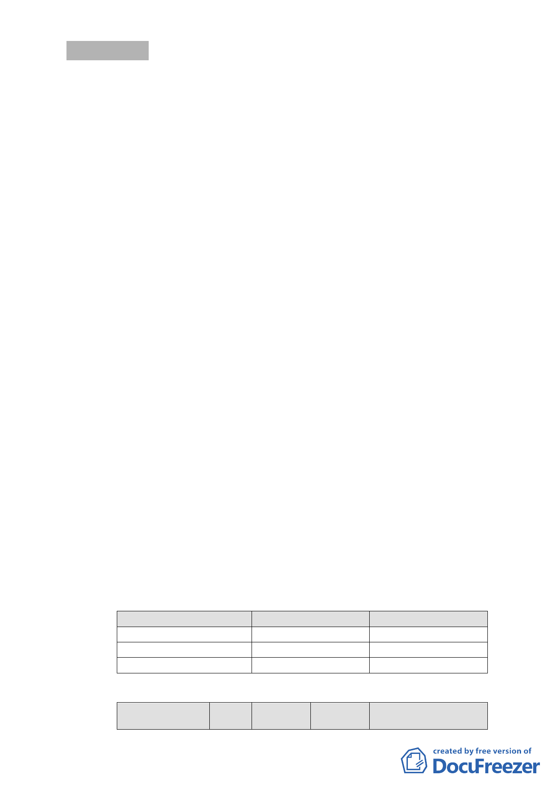

討論事項 三
案名：擬定臺北市文山區景美溪左岸老泉里附近地區細部計畫案
案情概要說明：
一、計畫範圍與面積：
本計畫區位於本市文山區景美溪南岸及北部第二高速公路兩
側，北臨景美溪、東側為政治大學，西與新店市接壤，南側
為二格山系之保護區所包覆；另北部第二高速公路橫亙於基
地中央，將計畫範圍一分為南北二部分。面積約26.88 公頃。
二、計畫目標：
本計畫之總體目標為創造富含休閒氛圍並結合生產、生活與
生態之休閒產業區，藉由休閒產業的發展，促進老泉里地區
的發展，其發展目標分述如下：
（一）發展本計畫區成為臺北市文山區休閒產業之活動據點。
（二）創造結合河岸商業、就業、居住、休閒複合機能之優質網
絡生活環境。
（三）塑造綠色運輸及生態節能空間環境，建構良好的生態社區。
三、計畫內容：
（一）土地及建築物使用組別
１、休閒產業專用區：專供休閒產業使用為主，並得作複合性
之居住及文化活動使用。
２、第二種住宅區：依本市土地使用分區管制規則第二種住宅
區規定使用。
３、市民住宅區：比照本市土地使用分區管制規則第二種住宅
區規定使用。
（二）土地使用強度
１、本計畫區各種使用分區之最高建蔽率、容積率應依下表之
規定：
使用分區
休閒產業專用區
第二種住宅區
市民住宅區
建蔽率（％）
55
35
40
容積率（％）
120
120
120
２、本計畫區內各公共設施之最大建蔽率、容積率如下表所示：
公共設施項目 街廓 建蔽率 容積率 使用性質
編號 （％） （％）
- 25 -